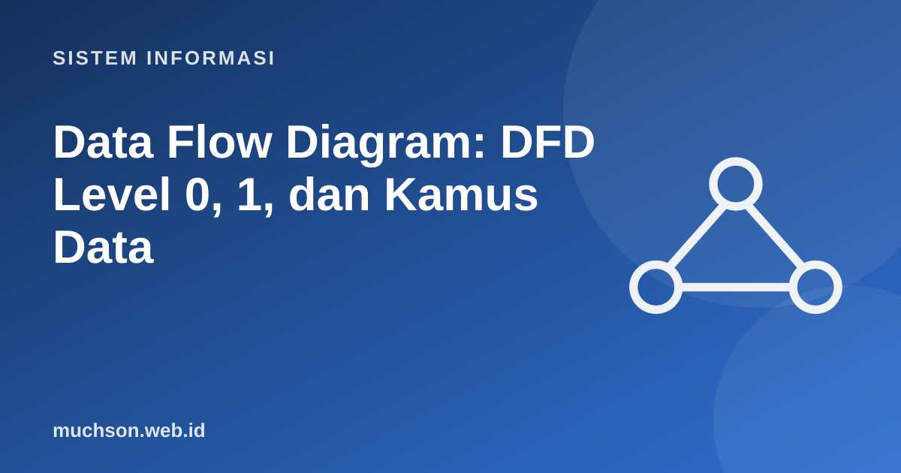

Beranda › Artikel › Sistem Informasi
Sistem InformasiData Flow Diagram: DFD Level 0, 1, dan Kamus Data
Diagram aliran data (DFD) memperlihatkan bagaimana data bergerak melalui sistem: dari mana datang, diolah apa, disimpan di mana, dan ke mana pergi. Ia tidak menggambarkan urutan atau logika keputusan, hanya perpindahan data, dan itulah kekuatannya untuk berkomunikasi dengan pengguna non-teknis.
Sebaiknya sudah paham: analisis kebutuhan

Setelah membaca dan mencoba materi ini, Anda mampu:
- mengenali empat simbol DFD dan fungsinya
- menggambar diagram konteks dan dekomposisi level 1
- menerapkan aturan penamaan dan penyeimbangan
- menyusun kamus data untuk aliran dan penyimpanan
- mengenali kesalahan umum pada DFD
Empat simbol
| Simbol | Aturan |
|---|---|
| Entitas eksternal | Berada di luar sistem; tidak boleh terhubung langsung ke penyimpanan data atau ke entitas lain |
| Proses | Harus punya masukan dan keluaran; diberi nomor dan nama kata kerja (Memvalidasi Pesanan) |
| Penyimpanan data | Hanya dapat dihubungkan lewat proses; diberi nama kata benda |
| Aliran data | Diberi nama yang menjelaskan isinya; bukan perintah atau kejadian |
Studi kasus: sistem peminjaman perpustakaan
Diagram konteks (level 0)
Seluruh sistem digambarkan sebagai satu proses; yang terlihat hanyalah entitas eksternal dan aliran data masuk-keluar.
DFD level 1
Proses tunggal dipecah menjadi subproses utama, dan penyimpanan data muncul.
Aturan penyeimbangan: aliran masuk dan keluar pada diagram konteks harus sama dengan gabungan aliran yang muncul pada level 1 dari sisi luar. Bila konteks menunjukkan aliran "laporan" ke pustakawan, level 1 harus punya proses yang menghasilkan aliran itu.
Kesalahan umum
Kamus data
Kamus data mendefinisikan isi setiap aliran dan penyimpanan agar tidak ambigu. Notasi umum: = terdiri dari, + dan, [ | ] salah satu, ( ) opsional, { } pengulangan.
Permintaan_pinjam = ID_anggota + {Kode_buku} + Tanggal
Bukti_pinjam = ID_anggota + Nama_anggota + {Kode_buku + Judul} + Tanggal_jatuh_tempo
D2_Peminjaman = No_transaksi + ID_anggota + Kode_buku + Tanggal_pinjam + Tanggal_jatuh_tempo + (Tanggal_kembali) + (Denda)
Status_buku = [ tersedia | dipinjam | hilang ]1. Gambarkan diagram konteks untuk sistem pemesanan makanan online dengan entitas Pelanggan, Restoran, Kurir.
2. Mengapa DFD tidak menunjukkan urutan proses?
3. Tulis kamus data untuk aliran "Faktur".
4. Apa yang salah: proses "Hitung Gaji" hanya punya aliran keluar "Slip Gaji" tanpa masukan?
- DFD: entitas eksternal, proses, penyimpanan data, aliran data.
- Diagram konteks (level 0) memperlihatkan batas sistem; level 1 membukanya menjadi subproses.
- Aturan: proses ber-input dan output, penyimpanan lewat proses, antar level seimbang.
- Kamus data mendefinisikan isi aliran dan penyimpanan.
Tanya jawab
Bedakan notasi Yourdon dan Gane–Sarson?
Sampai level berapa DFD dipecah?
DFD masih dipakai di era Agile?
Referensi
- Kenneth E. Kendall dan Julie E. Kendall, Systems Analysis and Design (Pearson)
- Edward Yourdon, Modern Structured Analysis (Prentice Hall, 1989)
- Tom DeMarco, Structured Analysis and System Specification (Yourdon Press, 1978)
- Whitten, Bentley, Systems Analysis and Design Methods (McGraw-Hill)